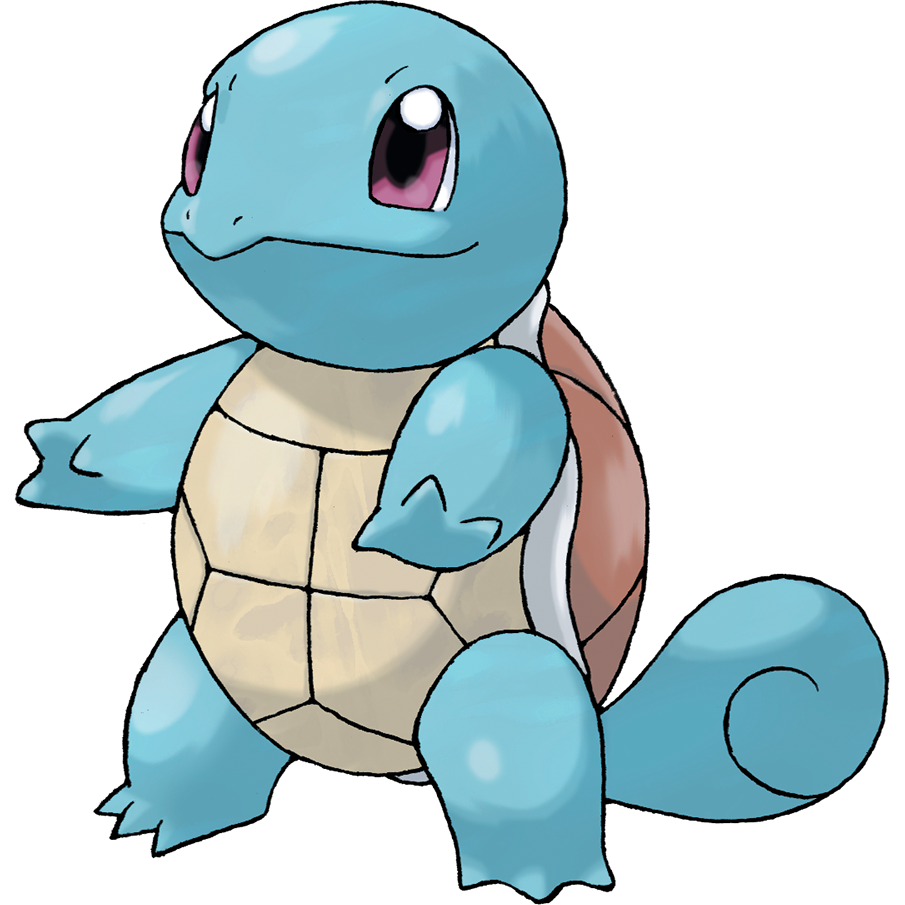

nel cartone animato questi animaletti vengono catturati e allenati dagli umani,che poi usano uno contro l'altro in tornei per poter vincere delle medaglie
ci sono vari tipi di pokemon: d'aria,d'acqua,di terra,magnetici...
i pokemon preferiti di Christian e Carlo sono i seguenti:
charmender

pikachu

growlithe

vulpix

squirtle
